How Often Should You Wash Residential Windows?
From pollen season to coastal salt spray, find the ideal cleaning frequency to prevent irreversible mineral etching on glass.
Read article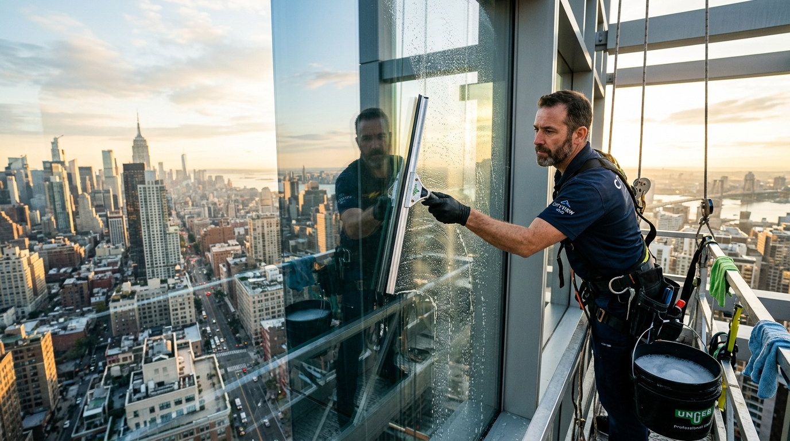
Glass Care Journal
Practical advice on glass care, the science of pure water, and architectural maintenance from our technicians.
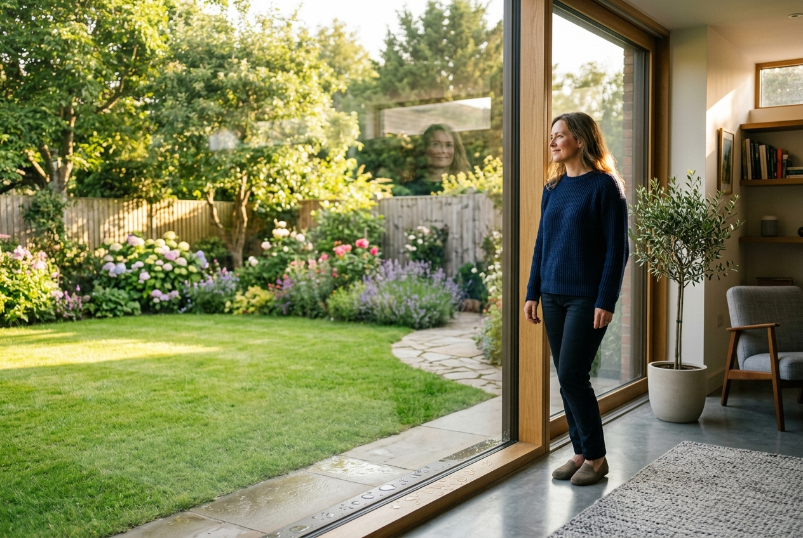
Residential CareFrom pollen season to coastal salt spray, find the ideal cleaning frequency to prevent irreversible mineral etching on glass.
Read article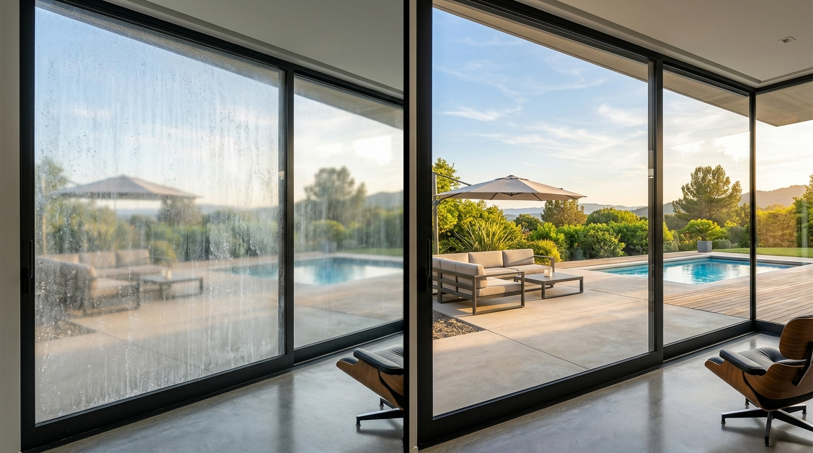
Residential CareDiscover the difference between surface calcium scale and permanent silica etching, plus safe commercial restoration methods.
Read article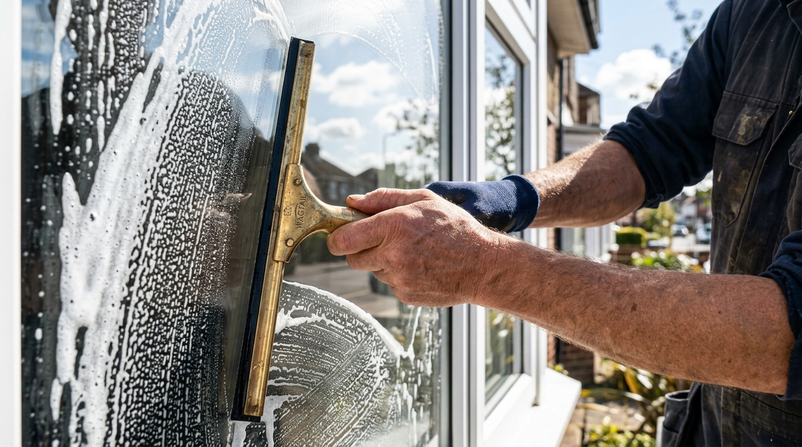
Residential CareProfessional squeegee techniques used by veteran window cleaners to eliminate edge bleeding, streaks, and rag marks.
Read article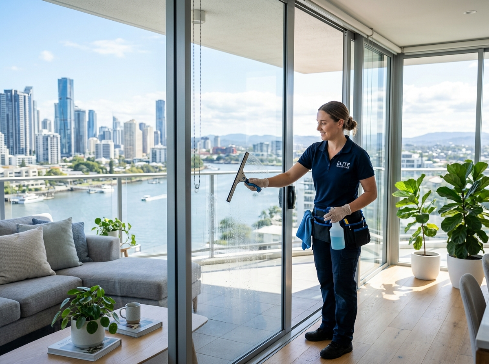
Pure Water TechDiscover why mineral-free deionised water lifts stubborn grime without detergents and dries 100% streak-free.
Read article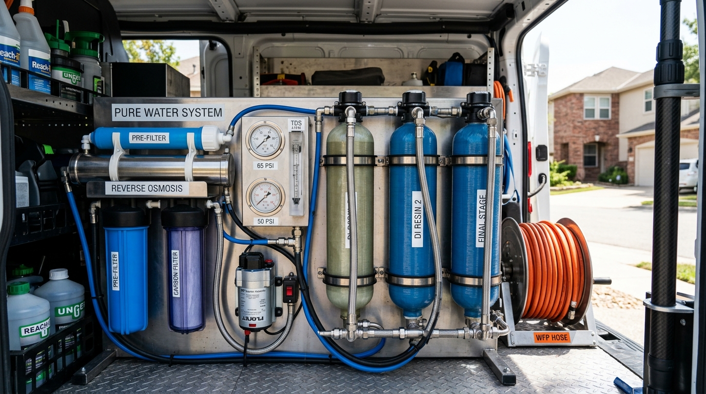
Pure Water TechExplore the multi-stage resin filters and sediment membranes our technicians use to create 99.99% pure laboratory-grade rinse water.
Read article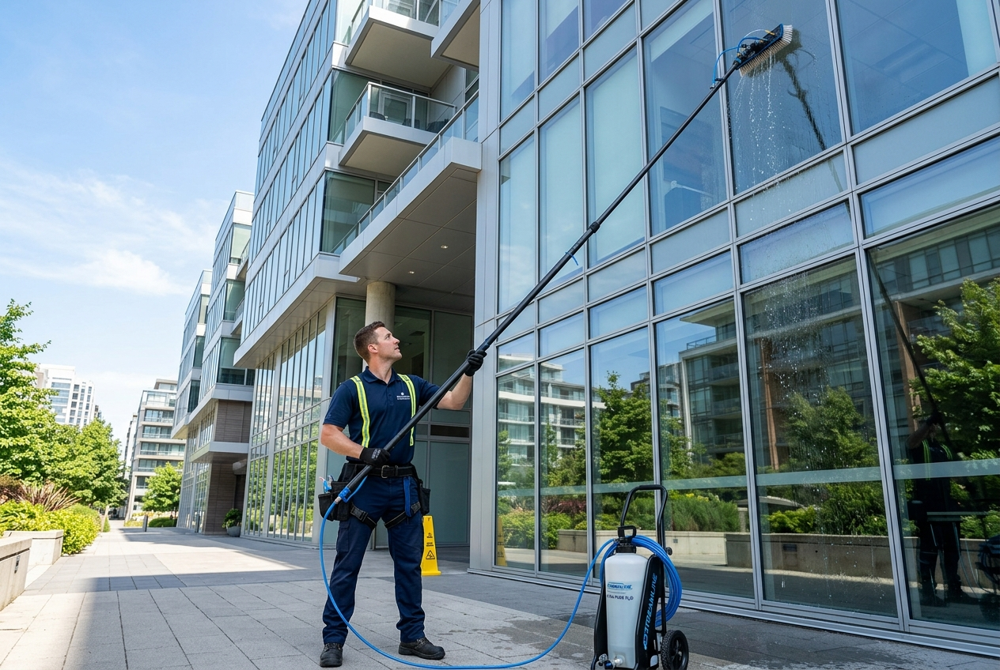
Pure Water TechHow ultra-light composite telescopic poles eliminate dangerous ladder setups while delivering spotless finishes to third-story windows.
Read article Commercial High-Rise
Commercial High-Rise
An inside look at how IRATA certified rope technicians safely maintain curtain wall glass on skyscrapers.
Read article Commercial High-Rise
Commercial High-Rise
Curtain wall facades require scheduled maintenance to prevent sealant breakdown and sulfur degradation on Low-E glass coatings.
Read article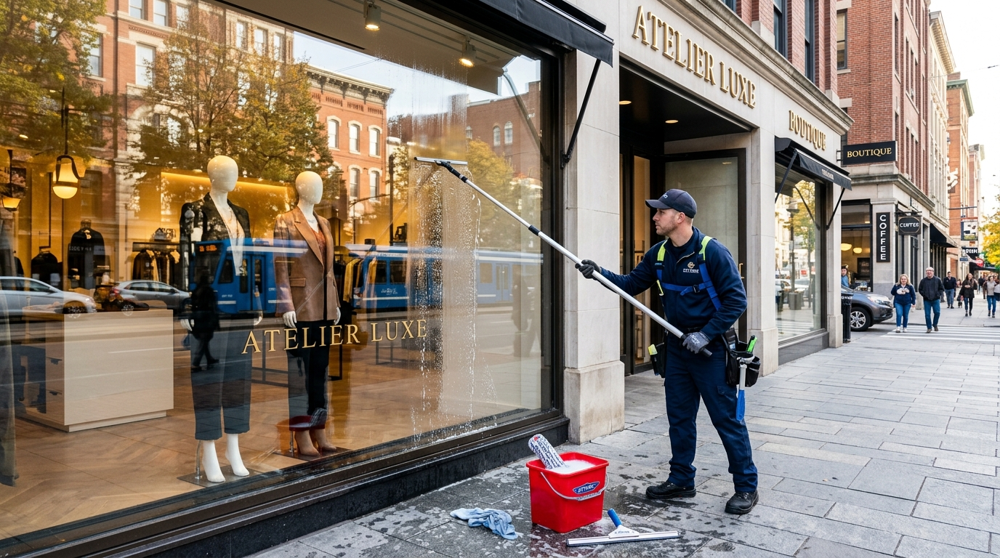
Commercial High-RiseWhy retail boutique display windows require bi-weekly morning cleans to eliminate traffic exhaust film and hand smudges.
Read article Specialist & Sunrooms
Specialist & Sunrooms
How to safely clear moss, lichen, and baked-on pollen from sunrooms and roof lanterns to restore natural light.
Read article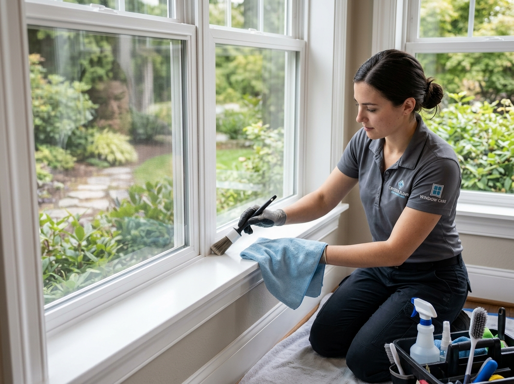
Specialist & SunroomsDirty flyscreens and window sliders trap allergens and mold spores that circulate indoors. Here is our deep detailing protocol.
Read article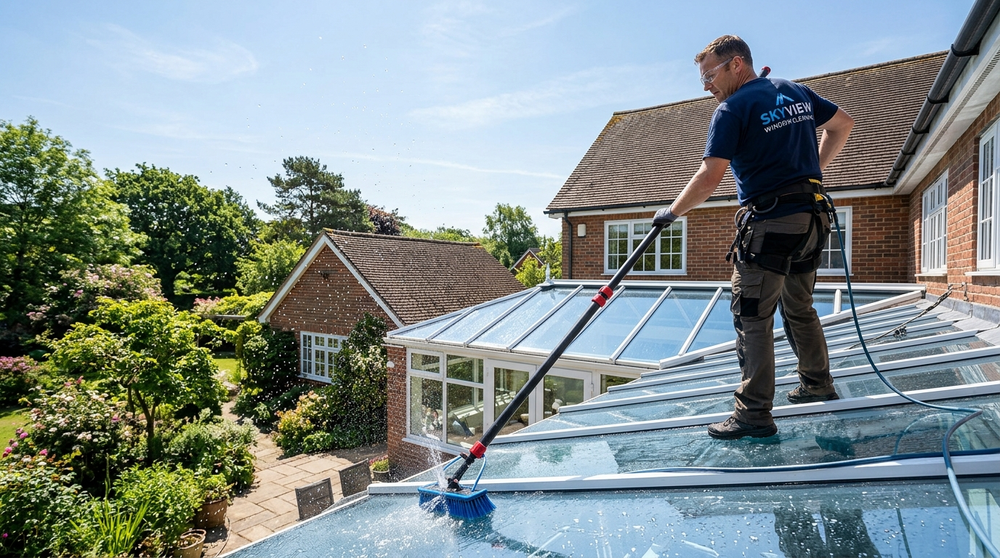
Specialist & SunroomsOverhead sloped glazing requires specialized non-abrasive soft brushes and zero-TDS pure water to protect silicone seals.
Read article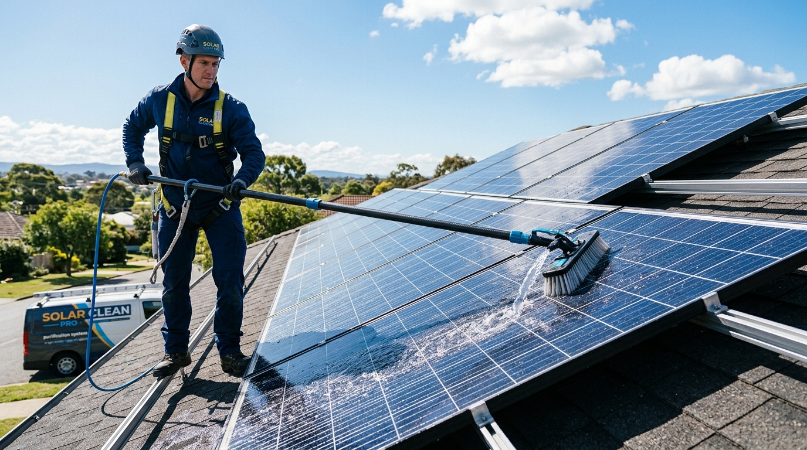
Solar & ExteriorDust, bird droppings, and baked minerals can reduce solar panel output by up to 25%. Learn why deionized water is required.
Read article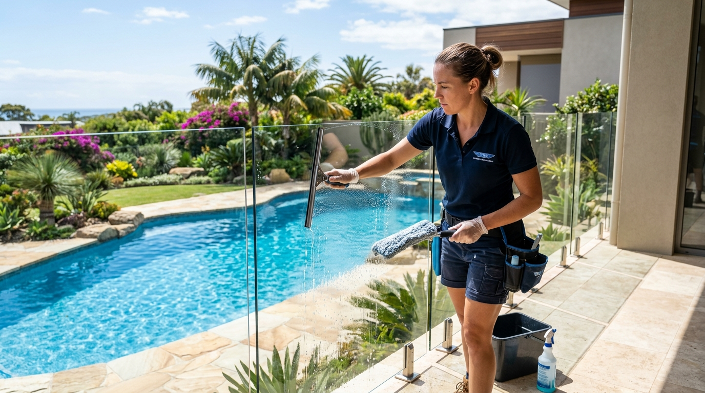
Solar & ExteriorHow maritime salt mist, chlorine splashes, and sunscreen residues etch outdoor glass, and how hydrophobic sealants protect them.
Read articleHow external entrance canopies and glass walkways accumulate environmental pollution and how scheduled deionized rinses restore clarity.
Read article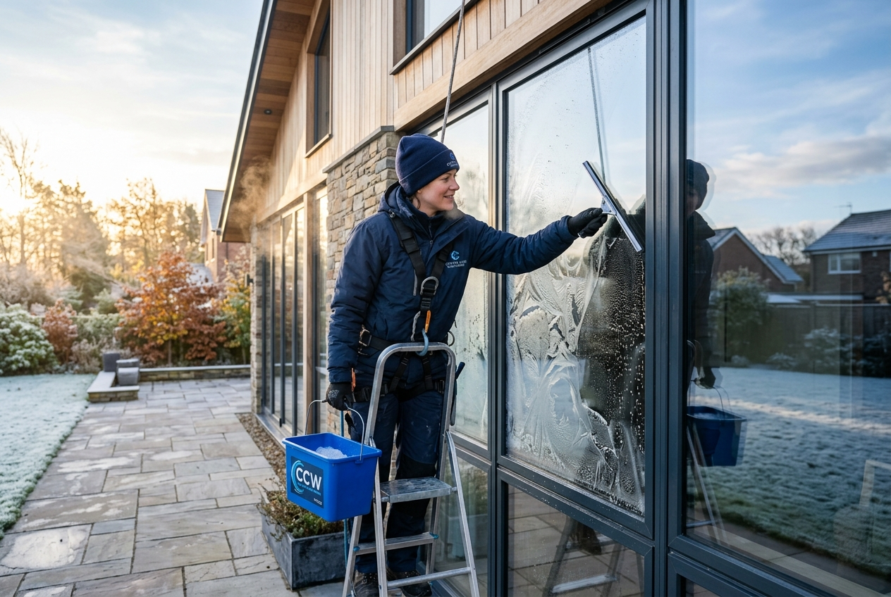
Seasonal Glass CareCold weather road salts and acidic winter rains accelerate frame corrosion. Here is how hydrophobic treatments preserve glass brilliance.
Read article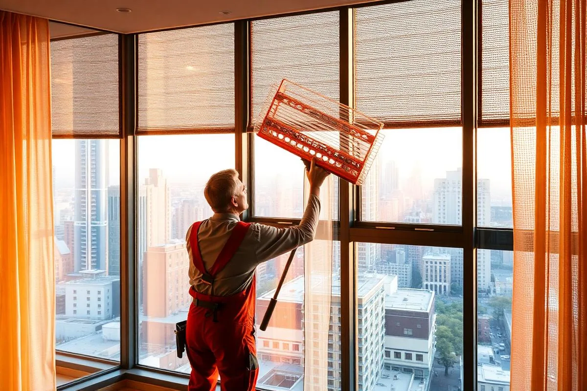
Seasonal Glass CarePine and tree pollen create a sticky yellow film that bakes into hot glass. Learn early-season preventive rinse techniques.
Read article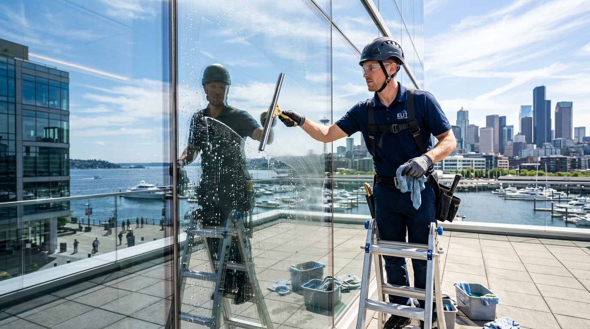
Seasonal Glass CareWashing glass under intense midday heat causes water to evaporate prematurely, leaving mineral lines. Here are optimal cleaning hours.
Read articleInstant fixed pricing, 100% satisfaction guarantee. Slots available as early as tomorrow.